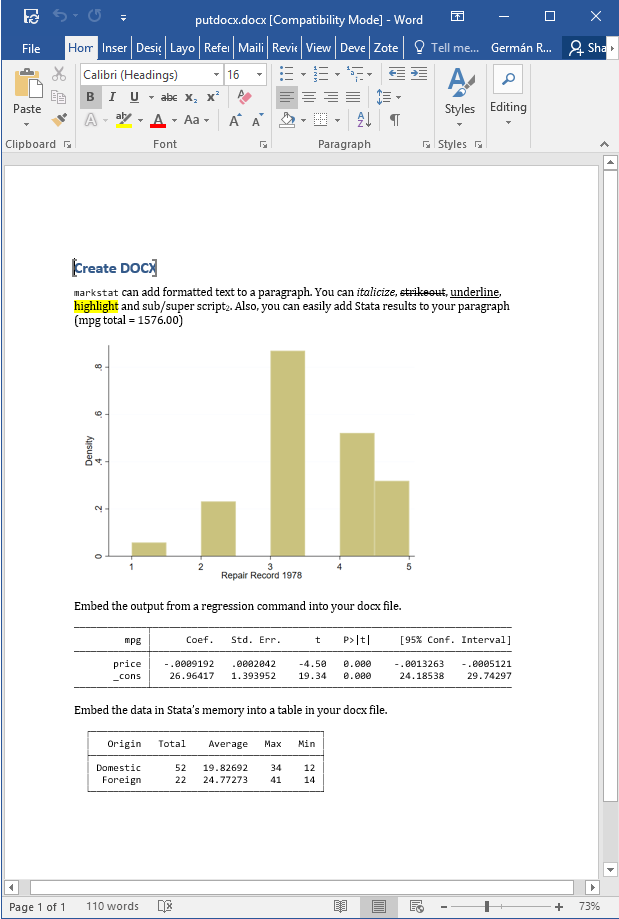

Stata 15 has a putdocx command that can automate the production of Word documents using low-level instructions. The markstat command can achieve equivalent results using Markdown to author the document.
The example below, taken from Stata 15’s announcement of putdocx, shows the code in Stata’s samplereport.do and the equivalent markstat script,
which we suggest is easier to read and write.
sysuse auto, replace
putdocx begin
// Create a paragraph
putdocx paragraph
putdocx text ("putdocx "), bold
putdocx text ("can add formatted text to a paragraph. You can ")
putdocx text ("italicize, "), italic
putdocx text ("strikeout, "), strikeout
putdocx text ("underline"), underline
putdocx text (", sub/super script")
putdocx text ("2 "), script(sub)
putdocx text (", and ")
putdocx text ("shade"), shading("blue")
qui sum mpg
local sum : display %4.2f `r(sum)'
putdocx text (". Also, you can easily add Stata results to your paragraph (mpg total = `sum')")
// Embed a graph
histogram rep
graph export hist.png, replace
putdocx paragraph, halign(center)
putdocx image hist.png
// Embed Stata output
putdocx paragraph
putdocx text ("Embed the output from a regression command into your docx file.")
regress mpg price
putdocx table mytable = etable
// Embed Stata dataset
putdocx paragraph
putdocx text ("Embed the data in Stata's memory into a table in your docx file.")
statsby Total=r(N) Average=r(mean) Max=r(max) Min=r(min), by(foreign): summarize mpg
rename foreign Origin
putdocx table tbl1 = data("Origin Total Average Max Min"), varnames
border(start, nil) border(insideV, nil) border(end, nil)
putdocx save myreport.docx, replace
Create DOCX
===========
```s/
quietly sysuse auto, replace
quietly sum mpg
```
`markstat` can add formatted text to a paragraph. You can *italicize*,
~~strikeout~~, underline, [highlight]{custom-style="Highlight"}
and sub/super script~2~. Also, you can easily add Stata results to your
paragraph (mpg total = `s %8.2f r(sum)`)
```s/
quietly histogram rep
quietly graph export hist.png, replace
```
{width="5in"}
Embed the output from a regression command into your docx file.
```s/
quietly regress mpg price
_coef_table
```
Embed the data in Stata's memory into a table in your docx file.
```s/
quietly statsby Total=r(N) Average=r(mean) Max=r(max) Min=r(min), ///
by(foreign): summarize mpg
rename foreign Origin
list Origin Total Average Max Min, noobs
```
This example is not very representative because it doesn’t have a lot of text. Markdown does not have a syntax for underline, but markstat accepts the HTML
tags and and converts them as needed for Word (as well as LaTeX).
For shading I used a “Highlight” custom style, that comes with the Word reference
document used by markstat. Other custom styles can be added by editing the
reference document.
The output of putdocx is available from the Stata website as a screen capture
here.
The output from markstat is shown below as a screen capture, and is also available as Word document. The input script can be downloaded from this site.
